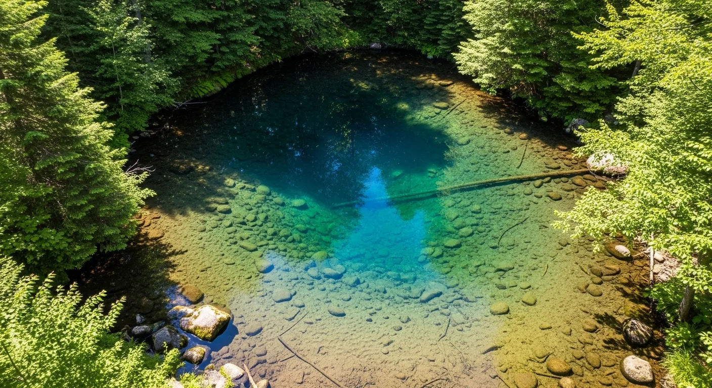
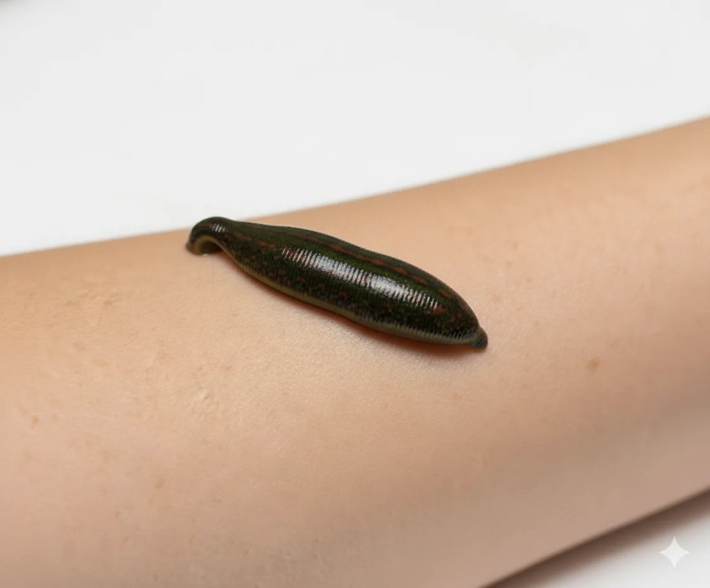

Hakkımızda
Bölgemiz ve Hedefimiz
Kocaeli ve İstanbul'dan sipariş alıyor, doğadan gelen şifayı bölgenize ulaştırıyoruz.
Kocaeli & İstanbul Odaklı Hizmet
Kocaeli Darıca merkezli olarak hizmet veren Kocaeli Sülük, öncelikle Kocaeli ve İstanbul bölgelerindeki müşterilerimize hizmet sunmaktadır. Bölgemizdeki sağlık uzmanları, tıbbi sülük kullanıcıları ve şifa arayan herkesi hedefliyoruz. Darıca, Gebze, Kocaeli merkez ve çevre ilçelerle birlikte, İstanbul'un Anadolu ve Avrupa yakasına hızlı ve güvenilir teslimat hizmeti sunuyoruz.
Uzman kadromuz ve stok yönetimimiz sayesinde, müşterilerimize en taze ve etkili tıbbi sülükleri ulaştırmayı hedefliyoruz.
Tek Kullanımlık & Hijyen Garantisi
Şunu net bir şekilde belirtmek isteriz ki, sattığımız her sülük SIFIRDIR ve sadece SİZE ÖZELDİR. Kullanılmış bir sülüğün tekrar satılması, bizim için mesleki ahlakın ve insan sağlığının ihlalidir. Bu, kırmızı çizgimizdir.
%100 Doğal ve Saf Kaynak
Sülüklerimiz, ilaç ve kimyasallardan tamamen arındırılmış, doğal gölet ortamlarında yetişir. Doğanın onlara bahşettiği şifalı enzimleri en saf haliyle koruyarak sizlere ulaştırırız.
Uzman Tercihi: Yerli Verbana Sülük
Rastgele değil; şifa potansiyeli, ısırma isteği ve enzim zenginliği en yüksek olan yerli Verbana türünü özenle seçerek satışa sunarız. Yılların bilgi ve saha tecrübesi, kalitemizin temelidir.

Hikayemiz: Gelenekten Gelen Şifa Tutkusu
Biz, bu topraklarda yüzyıllardır bilinen ve kullanılan tıbbi sülüklerin şifalı gücüne inanarak bu yola çıktık. Sağlığa olan tutkumuz ve yıllar içinde edindiğimiz derin tecrübe ile müşterilerimize sadece bir ürün değil, aynı zamanda güven ve kalite sunuyoruz.
Her bir tıbbi sülüğü, en ideal doğal ortamlarından büyük bir özenle seçiyor ve hijyenik koşullarda sizlere ulaştırıyoruz. Bizim için en büyük öncelik, doğanın bu mucizesini en saf ve etkili haliyle sizlere sunarak sağlığınıza katkıda bulunmaktır. Bilgi birikimimiz ve işimize olan saygımız, kalitemizin en büyük güvencesidir.
Şifanın Kaynağı: %100 Yerli Verbana Sülük
Her sülük aynı değildir. Önceden piyasada yaygın olan medicinalis türünün yerini, günümüzde hem Türkiye'de hem dünyada kliniklerin ve uzmanların vazgeçilmezi olan Verbana sülük almıştır.

Yerli Verbana Sülük
Stoklarımızdaki TürDoğal sularda dinlendirilmiş yerli Verbana sülük; sırtındaki canlı sarı-turuncu desenleri, güçlü tutunma refleksi ve zengin biyoaktif enzim salgısıyla modern seansların altın standardıdır.
Verbana & Medicinalis Karşılaştırma RehberiNeden Tamamen Verbana'ya Geçtik?
1. Canlı Isırma & Hızlı Tutunma
Medicinalis gibi nazlı davranmaz; seans esnasında dakikalarca bekleme yapmadan deriye hemen tutunur.
2. Yüksek Biyoaktif Enzim Konsantrasyonu
Hirudin ve kalin başta olmak üzere 100'ü aşkın şifalı salgıyı dokuya en verimli şekilde aktarır.
3. Kargo Yolculuğuna Üstün Dayanıklılık
Türkiye'nin 81 iline gönderilen kargo paketlerinde iklim ve ısı değişimlerine karşı çok daha dirençlidir.